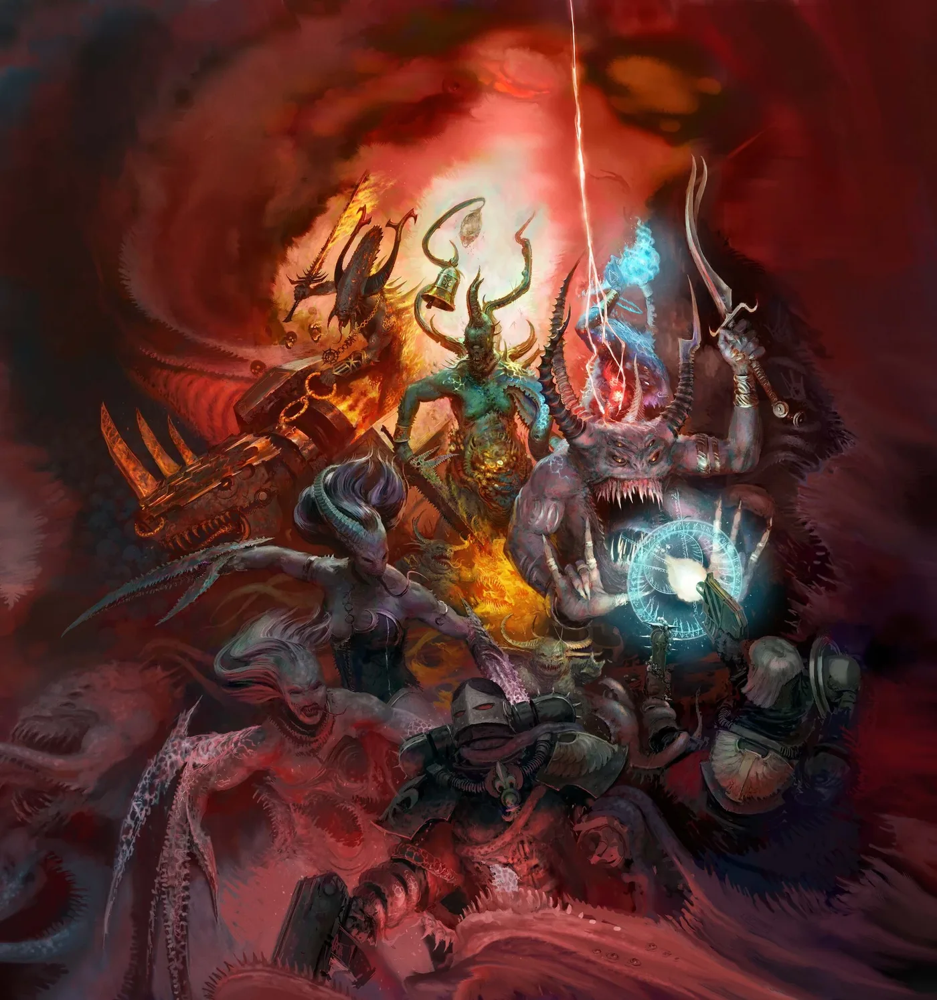

ทัพทั้งหมดใน Warhammer 40K
คลิกที่การ์ดเพื่อดูเนื้อเรื่อง สไตล์การเล่น จุดเด่น และข้อควรรู้ของแต่ละทัพ ใช้ตัวกรองหรือค้นหาชื่อ (ไทย/อังกฤษ) ได้
Imperium (อิมพีเรียม)
กองกำลังของจักรวรรดิมนุษย์ ตั้งแต่ทหารธรรมดาถึงหุ่นรบยักษ์ ในเกมสามารถรวมบางหน่วยจากหลายสังกัดได้ภายใต้กฎการจัดทัพ
Chaos (เคออส)
ผู้ทรยศและปีศาจที่รับใช้เทพแห่ง Chaos ทั้งสี่ ได้พลังมหาศาลแลกกับความบ้าคลั่งและการกลายพันธุ์
Xenos (ซีนอส)
เผ่าพันธุ์ต่างดาวที่มีเป้าหมายของตัวเอง ไม่มีใครเป็นพันธมิตรกันจริง ๆ แต่ละทัพเล่นแตกต่างกันมาก
IMPERIUM ทัพของจักรวรรดิ
SPACE MARINES Chapter ยอดนิยม
Chapter เหล่านี้เล่นด้วยกฎของ Space Marines เป็นหลัก แต่มียูนิต ตัวละคร และกฎพิเศษเพิ่มเติมเป็นของตัวเอง (ผ่านหนังสือเสริม/Detachment) จึงแยกให้ดูง่ายขึ้น
CHAOS ทัพของ Chaos
XENOS ทัพต่างดาว
ไม่พบทัพที่ตรงกับคำค้นหา ลองพิมพ์คำอื่นดูนะ
ประเมินจากมุมมองของผู้เล่นมือใหม่ในภาพกว้าง พลังของแต่ละทัพเปลี่ยนไปตามการอัปเดตกติกา (Balance Dataslate) และ Codex ใหม่ ทุกทัพเล่นสนุกและชนะได้ถ้าเข้าใจมัน